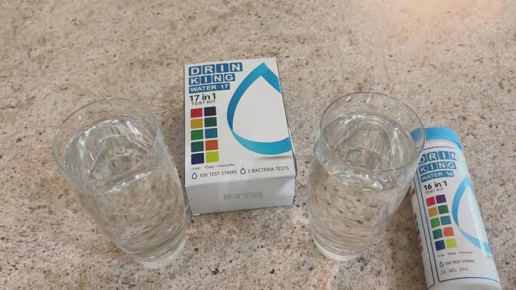
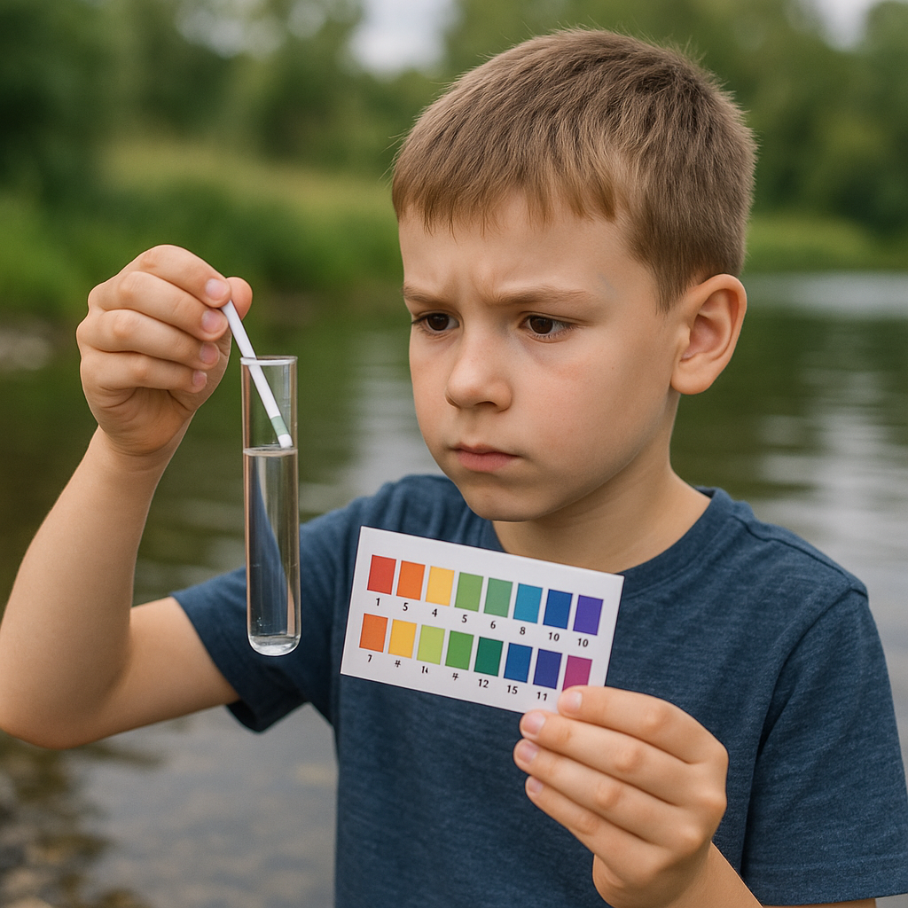
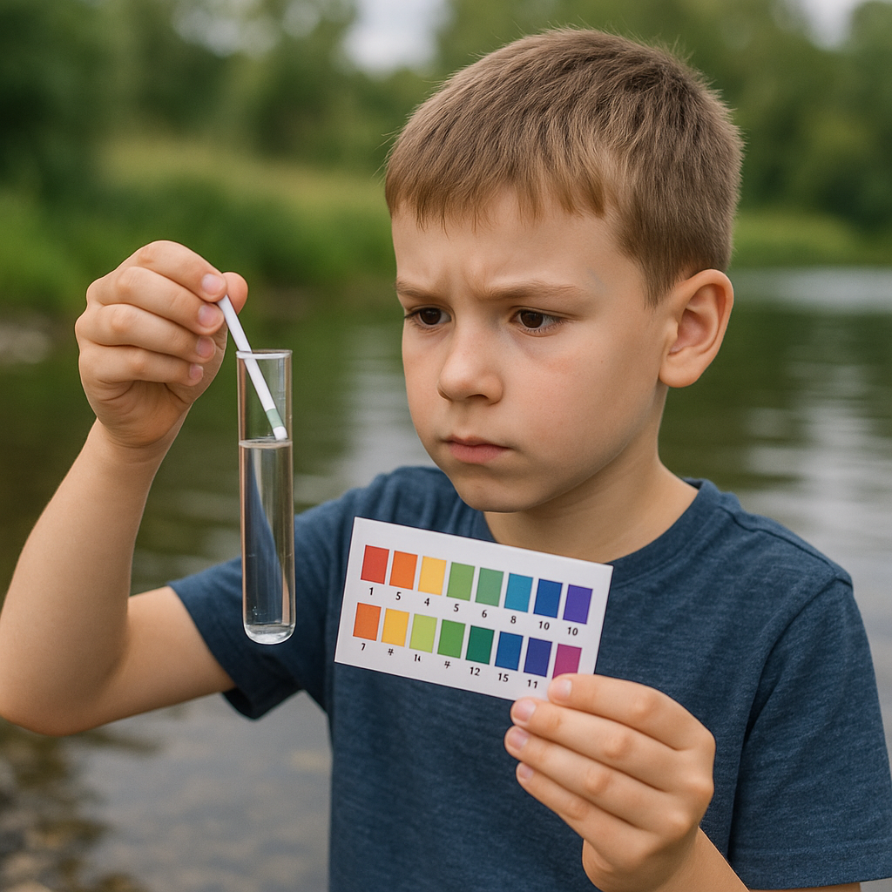

Week 4: Water Testing
Day 1:Discuss common contaminants and the parameters to be tested such as pH, TDS (Total Dissolved Solids), and hardness. Plan out the testing process and identify nearby water sources for sample collection.
Day 2: Collect water samples from different sources like tap water, borewell, well, pond, and filtered water. Label each sample with its source name, date, and location to ensure accurate tracking during testing. Day 3: Conduct physical observation of all collected samples. Check for color, smell, presence of particles, and overall clarity of water. Record all visible differences between the samples. Day 4: Perform chemical tests on each sample using a water testing kit. Measure important parameters like pH level, TDS value, and hardness, and note whether the values fall within safe drinking water limits. Day 5: Analyze the data collected from each test. Compare the results across different samples to identify which water sources are safe and which may be contaminated. Create a table or graph to present findings clearly. Day 6: Prepare a report summarizing all activities and results. Share the findings through posters or presentations to raise awareness among classmates or the local community about water quality and the importance of safe drinking water.

 

Collected samples from taps, wells, and handpumps using kits to check for cleanliness and contamination. The team documented the results and shared findings with the community.
Key Learnings
- Understood the importance of regular water testing.
- Learned how to interpret water test results.
- Shared findings with local residents for awareness.